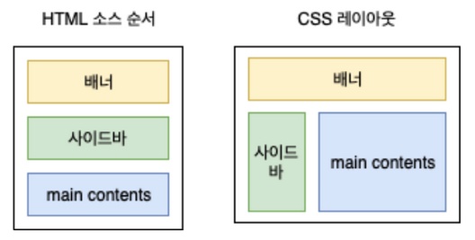

CSS 박스의 테두리 영역의 크기를 결정하는 속성.
일반적으로 블록 요소의 크기는 바깥여백 + 테두리 + 안쪽여백을 합산한 결과값임.
해당 요소를 만들 때 지정하는 가로/세로의 크기 외에
여백과 테두리 등의 두께가 합산되어 원래 의도 이상의 크기가 될 수 있음.

마진, 테두리, 여백이 없는 케이스 - 크기 정상
테두리, 여백이 있는 케이스 - 원래 사이즈에 (padding*2+border*2)가 추가됨
테두리, 마진이 있는 케이스 - 보이지 않는 마진을 제하면 (border*2)만 추가되었지만 실제 차지하는 크기는 box2와 같아서 레이아웃에 영향을 줌
border-box 속성을 이용하면 블록요소의 크기를 계산할 때
바깥여백 + 테두리 + 안쪽여백을 포함해 계산함.
단, 이렇게 하면 컨텐츠 영역은 실제 설정값보다 작아질 수도 있음.

마진, 테두리, 여백이 없는 케이스 - 크기 정상
테두리, 여백이 있는 케이스 - box-sizing: border-box를 적용해서 기설정한 크기를 유지함 단, 이 경우 내부는 그만큼 줄어들음
테두리, 마진이 있는 케이스 - box-sizing: border-box를 적용해도 마진에는 영향을 주지 않음
일반적인 레이아웃 흐름은 마크업이 작성된 순서에 따라
요소는 위에서 아래로, 왼쪽에서 오른쪽으로 나열됨.
하지만, float 이라는 속성을 이용하면 배치흐름에서 벗어나
페이지의 왼쪽이나 오른쪽으로 이동시킬 수 있음.
즉, 문서의 흐름과 관계없이 화면배치를 유연하게 할 수 있음.
복잡한 형태의 레이아웃을 구성하는데 필요한 핵심 속성.

float 속성이 지정된 요소는 문서의 일반적인 흐름에서 벗어난 상태이기 때문에
후속요소는 일반적이지 않은 형태가 될 수 있음.
이러한 문제를 해결하기 위해서 clear 속성을 적용해 특정 요소 이후로는 float의 영향을
받지 않도록 할 수 있음.